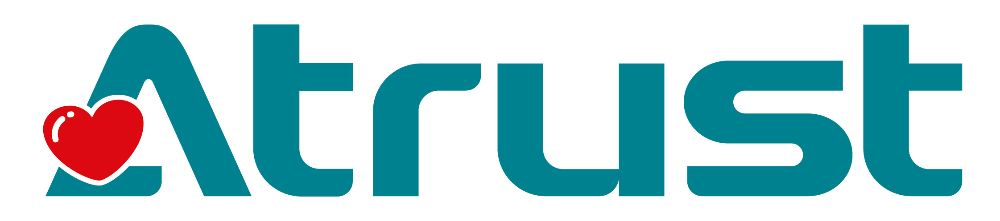

噗噗
AI 英語學伴
有網路用大腦、沒網路也照常聊
噗噗是誰
噗噗是一隻要修好太空船回家的企鵝。孩子用英文跟牠聊天，說得出來就有能量星飛進太空船。說錯沒關係，不要怕出錯，噗噗會陪你一起練習——Practice makes perfect，熟能生巧！
說中文、說英文、混著說都可以。課程有 8 個單元，每個單元最後有 3 題密碼小測驗。
怎麼玩
- 摸一下螢幕
- 點「地球好朋友」名牌
- 按「按我說話」，說完再按一次
噗噗的大腦在哪裡
有網路時孩子說的話轉成文字後，送到我們自己架設的伺服器上的大型語言模型，回答更靈活，通常 1 秒內回來。
沒網路時改用板子上的 AI 晶片自己想，對話照常進行，不會停下來等網路。
兩邊同時開始想，雲端在時限內回來就用雲端的答案，否則用板子上的。展場可以當場拔掉網路試試看。
隱私
- 不錄影、不存照片。
- 送到伺服器的只有聊天文字，不含聲音、影像或臉部資料。
- 伺服器不是公用的雲端服務。
- 說完掰掰，這次的對話紀錄就清空。
贊助
